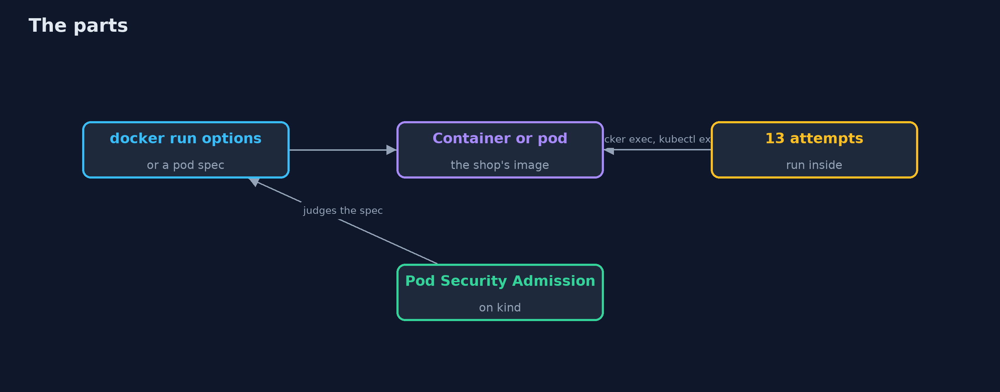
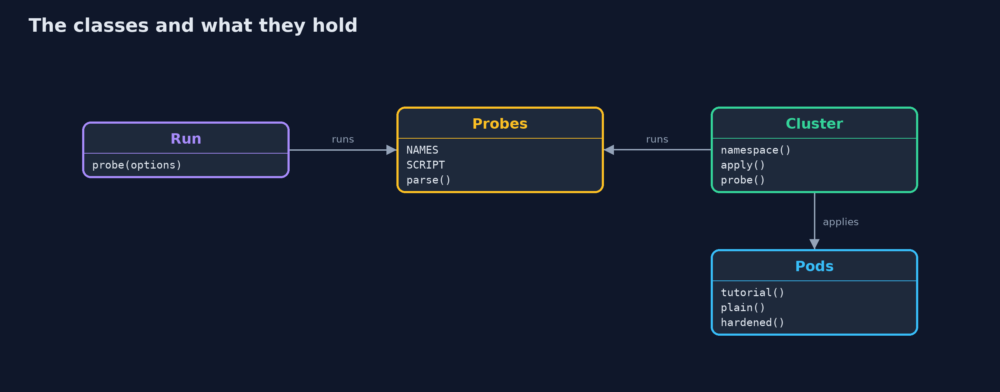
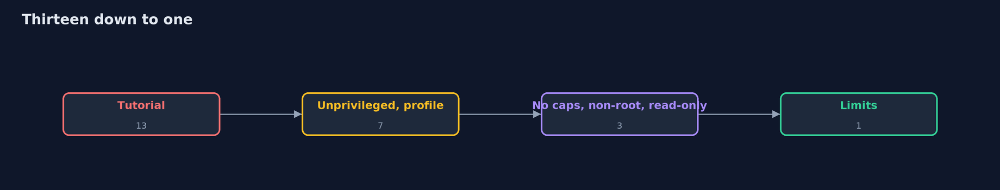
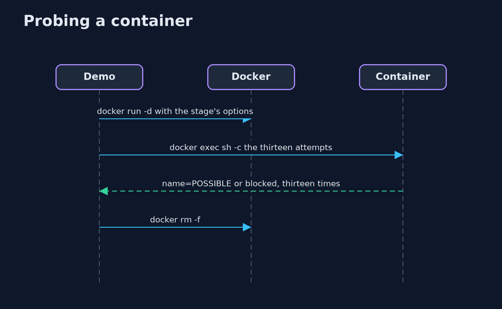

Container Hardening with Docker and kind
src/main/java/com/jk/explore/security/containerhard/
├── Cluster.java A real Kubernetes cluster made by kind (one node, itself a container), with its own kubeconfig file, deleted on close
├── ContainerHardeningDemo.java What each attack that works means, in a few words
├── Image.java The shop's application image, as an ordinary team would have built it: an app user that owns the app, and a secret in the environment
├── Pods.java The three pods of the lesson as manifests: the tutorial's, the default, and the hardened one
├── Probes.java Thirteen things a hijacked process tries, written as shell commands that run inside the container as whatever user the container runs as
├── Run.java One container started with a list of docker run options, probed, and removed
├── Seccomp.java A seccomp profile that denies the system calls Docker's own default profile denies (mount, unshare, ptrace, kernel modules, keys, bpf, clock changes...)
└── Sh.java Runs a program and returns what it printed, whether it worked or not
Thirteen real attempts run inside a real container as the user it runs as: the tutorial's docker run gives all thirteen, no options gives seven, and adding a seccomp profile, dropping capabilities, running as another user, a read-only root with a noexec temporary directory and memory and process limits brings it to one, the secret the application has to read; the same on a kind cluster, where Pod Security Standards refuse the tutorial's pod, a plain pod in a restricted namespace, and admit the hardened pod, which still has two attacks left; the layers cover for each other's mistakes, and the standards judge only the spec.
The plain container-hardening project scores docker run options and pod specs with a model. This one measures: it builds the shop's image, starts real containers with different options and runs thirteen real attempts inside each (write to the application, run a dropped file, become root, sniff the network, mount a file system, find the Docker socket, the host's files, the host's network and processes, a missing memory or process limit, the secret in the environment). Then it makes a real kind cluster and lets Pod Security Admission judge three pods. It needs Docker, kind and kubectl (brew install kind kubernetes-cli); the tests are tagged integration: ./gradlew integrationTest.
What it shows:
- No options: 7 of 13. The shop's image run as it is: secrets in the environment, a writable root, a dropped file that runs, root, raw sockets, no memory or process limit.
- The tutorial's command: 13 of 13. --privileged, no seccomp, the host's network and processes, the Docker socket, the host's /etc.
- One setting at a time. 13, 8, 7, 5, 5, 5, 3, 1. The number stays the same where the set changes (a non-root user closes become-root and opens tamper-with-app, which the app user owns), and --security-opt no-new-privileges moves nothing in an image with no set-user-id program.
- The hardened container. --user 10001 --cap-drop=ALL --read-only --tmpfs /tmp:noexec --security-opt no-new-privileges --memory --pids-limit and a seccomp profile: one attack left, the secret that the application must read. Add NET_RAW and nothing changes; add root and SYS_ADMIN and only the seccomp profile still stands between it and mount.
- Kubernetes on kind. Namespaces that enforce privileged, baseline and restricted: the tutorial's pod is refused twice (3 and 7 violations), a plain pod is admitted by baseline and refused by restricted (4), a warn-only namespace admits it with a warning, and the hardened pod is admitted. Probed from inside: the plain pod 7 attacks, the hardened pod 2.
Maps to: OWASP Top 10 (2025) A02 Security Misconfiguration · CIS Docker and Kubernetes Benchmarks · Kubernetes Pod Security Standards · CWE-250 (execution with unnecessary privileges), CWE-269.
The idea in everyday terms
A bank's back office after a break-in. Instead of asking whether the lock was good, ask what the burglar can reach once inside: the safe, the keys, the neighbours' doors. Each rule you add, a cage around the safe, no keys on the desk, no phone line out, takes something away, and the measuring is done by walking the burglar's route.
The scenario
An online store runs its application in a container. The demo assumes that a process in it has been taken over, runs the attacker's thirteen first steps in containers started in different ways, and then asks a Kubernetes cluster to refuse the worst of them.
Run
./gradlew run
The demo tells the story in 5 acts, each printing exact numbers that the tests check:
| Act | What it shows |
|---|---|
| 1. What docker run with no options gives an attacker | Seven of thirteen attempts work: secrets, a writable root, a dropped file, root, raw sockets and no limits. |
| 2. The configuration from the tutorial | --privileged, no seccomp, the host's network and processes, the Docker socket and the host's /etc: all thirteen work. |
| 3. One setting at a time | 13, 8, 7, 5, 5, 5, 3, 1: the number goes down only when an option takes away something an attack uses. |
| 4. The hardened container | One attack left, the secret the application must read; NET_RAW changes nothing, and root with SYS_ADMIN is held only by the seccomp profile. |
| 5. The same on Kubernetes, with Pod Security Standards on kind | Baseline refuses the tutorial's pod, restricted refuses a plain pod and admits the hardened one, which still has two attacks left. |
Test
./gradlew test
15 tests in DemoRunsTest, HardeningTest, ParsingTest. The readers of the probe output and of admission messages are tested on text. The rest starts containers and a kind cluster and removes them (./gradlew integrationTest). They need Docker, kind and kubectl.
What the simulation got right, and what it left out
The containers are real, started by docker run and probed with docker exec; the cluster is real, made by kind with its own kubeconfig file and deleted at the end; the pods are probed with kubectl exec. Ports, names and addresses are never printed; the demo takes about two minutes, most of it the cluster.
Technologies and versions
Every version below is pinned in the project's build files and was the latest stable release when the project was built.
| Technology | Version | Used for |
|---|---|---|
| Java | 25 | the language and runtime; a Gradle toolchain finds or downloads the JDK |
| Gradle | 9.8.1 (wrapper) | build and run; nothing to install, the wrapper downloads it |
| org.junit.jupiter:junit-jupiter | 6.1.3, set by junit-bom | JUnit 5: the tests (tests only) |
| org.junit.platform:junit-platform-launcher | 6.1.3, set by junit-bom | JUnit platform launcher, which Gradle needs to run the tests (tests only) |
| videokit | repository tool (tools/videokit) |
the narrated video and animation: Piper en_US-amy-medium, speed 0.8, longer pauses (the amy-slow voice) |
Learning Material
| Document | What it is for |
|---|---|
| Problem statement | the situation and what the project must show |
| Prerequisites | what you need to know first |
| Container Hardening with Docker and kind, explained | the acts in prose |
| Session guide | a one-hour lesson with exercises |
| Animated walkthrough | the acts step by step, narrated |
| Threat model | what is protected, who could harm it, and how, using STRIDE |
| Spec | what this project must be true of |
| Expected output | the golden demo output every test and every port checks against |
The idea in one picture
Options go in, thirteen attempts run inside, a cluster judges the spec.

Where each piece sits
A run, the probes, and the cluster.

How the data moves
Each option takes away something.

Who calls whom, in order

Video
video/container-hardening-with-docker-and-kind-explained.mp4 (with .m4a audio and .srt subtitles) is built by video/build_video.sh. Rendered media is not committed.
What it costs
- Every restriction can break the application: a read-only root needs a temporary directory, a non-root user needs ownership of its files.
- The secret the application must read, a hijacked application can read too.
- Kubernetes standards judge the spec, and do not see what happens at run time.
- Limits need numbers that someone measures.
- A lab daemon may differ from production: here, Docker applies no seccomp filter by itself.
When this is too much
A throw-away container on a developer's laptop that runs a trusted test for a minute does not need all of this. Harden what is exposed to the network, holds secrets or runs for long.
Where you have already met this
docker run --privilegedin a tutorial.securityContextin a manifest.- A namespace label
pod-security.kubernetes.io/enforce. - A "permission denied" after someone added
readOnlyRootFilesystem.
Where this sits
This is the tools version of container-hardening, in the platform-hardening module, after linux-hardening-with-docker, which scanned the inside of the image.